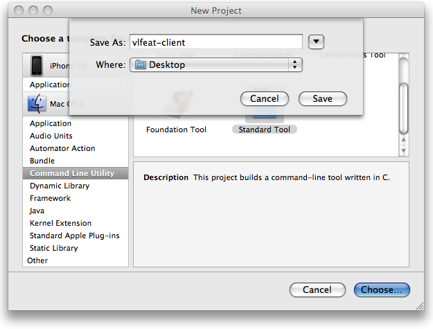
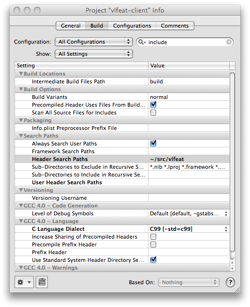
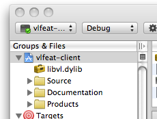
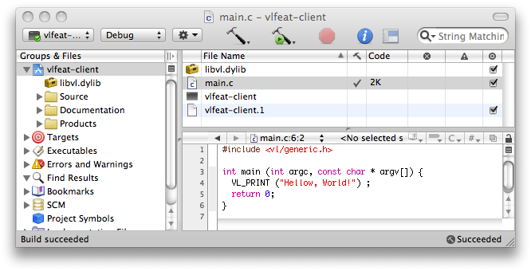
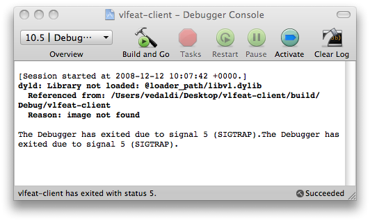
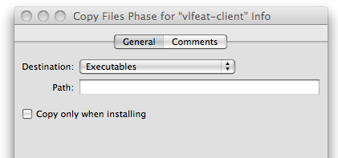
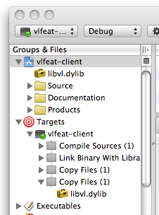
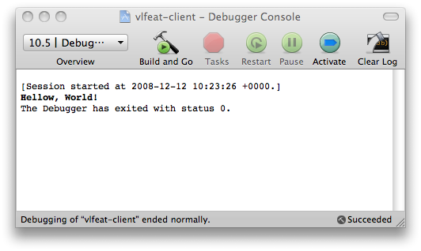

These instructions show how to setup a basic VLFeat project with Apple Xcode. For the sake of simplicty, we create a command line tool written in C. However, these steps apply with minor modifications to other project types and to the C++ lanuage.
First, let us create a new project
called vlfeat-client. Open Xcode and select File
> New Project > Command Line Utility > Standard Tool
and click Choose. Give a name to your project (in our
case vlfeat-client), and click Save.

Now we need to add VLFeat to the C compiler include search
path. To do this, select the vlfeat-client target and
open the information panel (the blue button,
or Command-i). Then select the Build panel, search for
the field Header Search Paths, and add
VLFeat root path (in our case this is
just ~/src/vlfeat).

Next, we add the libvl.dylib library file to the
project resources so that Xcode links against it. To do this, drag
and drop the libvl.dylib file (in our example
~/src/vlfeat/bin/maci/libvl.dylib) to the left panel and click
Add.

Next, edit the main.c source file and type the following code:
#include <vl/generic.h>
int main (int argc, const char * argv[]) {
VL_PRINT ("Hello world!") ;
return 0;
}

If you try to build the project, it should compile without errors
(if you are using C++, do not forget to wrap the include
statements in a extern "C" {} block). However, if you try
to run the program, it will fail, complaining that it cannot find the
library image.

The reason is that libvl.dylib is compiled with the
library install_name equal
to @loader_path/libvl.dylib. This causes the run-time
loader to look for the library in the same directory of the
executable. There are two ways around this problem: The first is to
install the library in a standard location
(e.g. /usr/local/lib) and use the otool
command to change the
library install_name. The other is to simply copy
the libvl.dylib file in the executable directory. Here we
demonstrate the second technique.
To copy libvl.dylib in the executable directory, we
add a Copy Files build phase to the project. Right-click
the vlfeat-client target in the project panel and select
Add > New Build Phase > New Copy Files Build
Phase. Select Destination: Executables. Then drag-and-drop
the libvl.dylib item from the panel to the Copy
Files build phase.


Now rebuild the project, and run it. It should run correctly, and if you open the debugger console you should see this:
